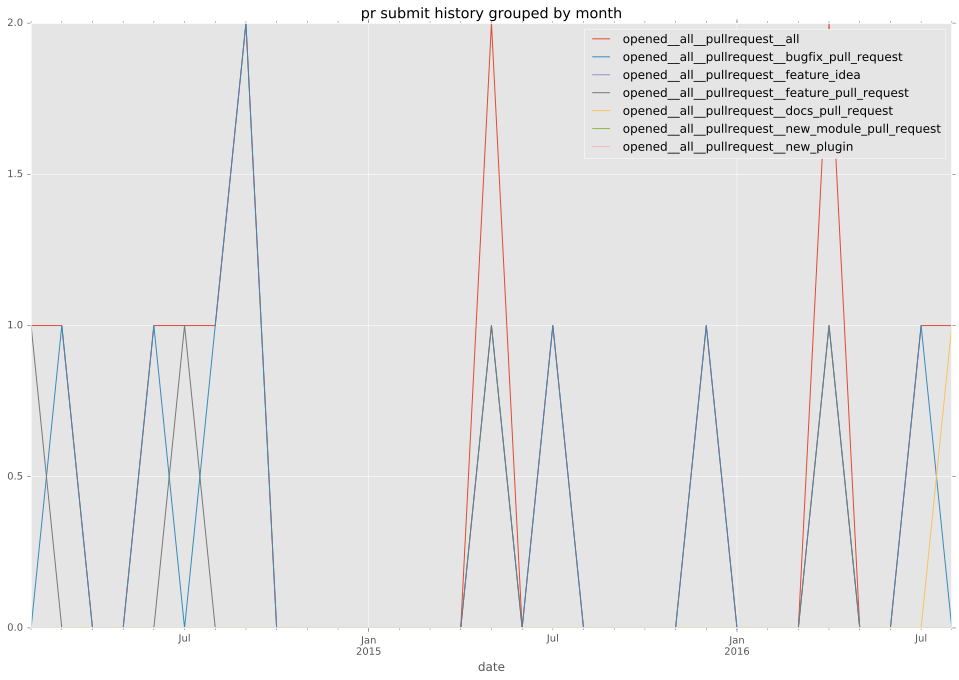
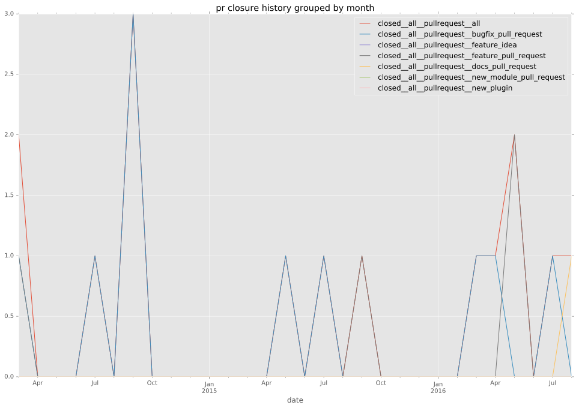

total issue counts
feature pull request: 4
pullrequest: 15
docs pull request: 2
bugfix pull request: 9
feature idea: 2
issue: 6
bug report: 4
issue history
pullrequest history


days open by issue type
bugfix pull request
count: 13
std: 31.2526921917
min: 0
max: 106
median: 1.0
mean: 16.6923076923
all
count: 28
std: 135.351453162
min: 0
max: 522
median: 8.0
mean: 68.6428571429
pullrequest
count: 0
std: nan
min: nan
max: nan
median: nan
mean: nan
docs pull request
count: 4
std: 2.30940107676
min: 0
max: 4
median: 2.0
mean: 2.0
feature pull request
count: 6
std: 189.199101478
min: 12
max: 421
median: 25.0
mean: 139.5
feature idea
count: 1
std: nan
min: 522
max: 522
median: 522.0
mean: 522.0
issue
count: 0
std: nan
min: nan
max: nan
median: nan
mean: nan
bug report
count: 4
std: 69.303679556
min: 0
max: 147
median: 95.5
mean: 84.5
closures grouped by total days open